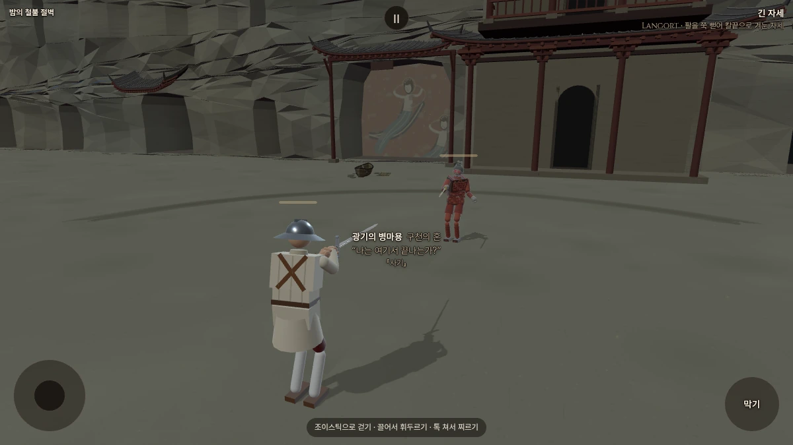
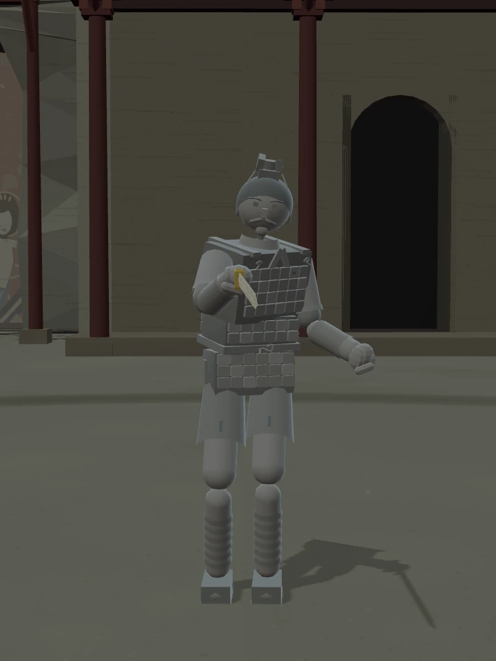
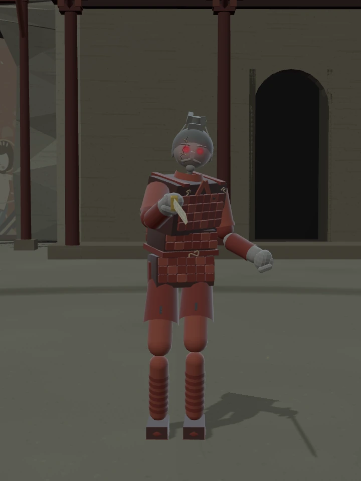
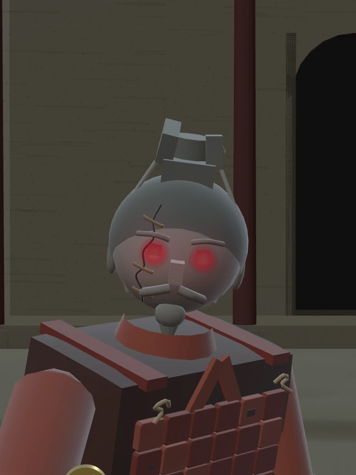
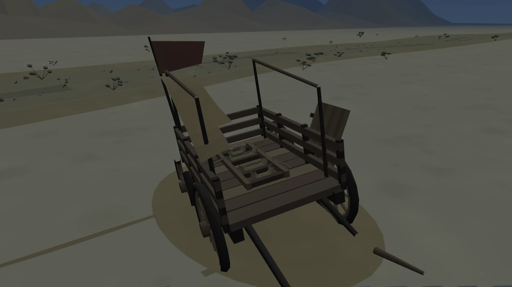
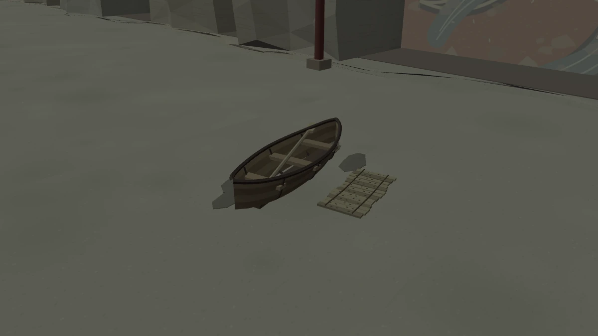
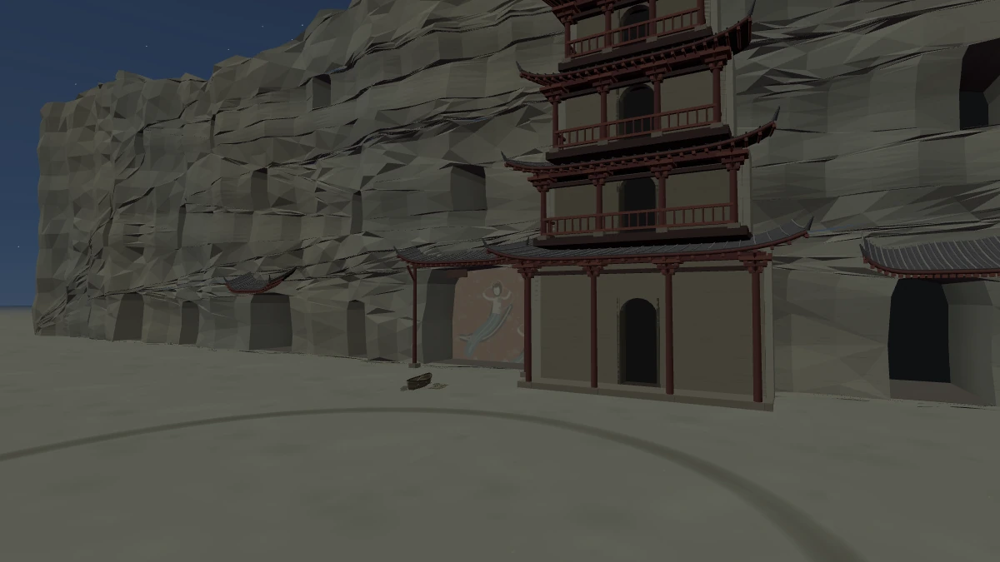
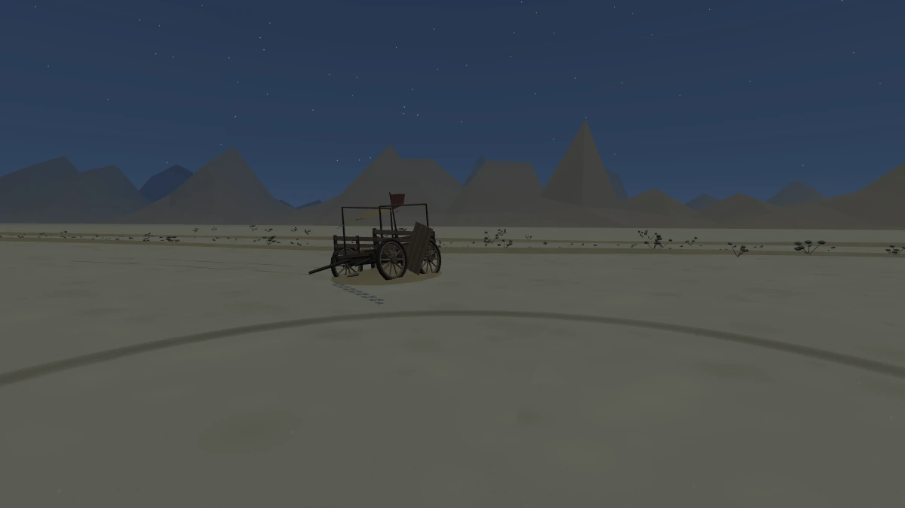

STILLNESS · 적막
돌아갈 강이 없는 밤
밤의 철불 절벽 · 광기의 병마용
수레는 비었고, 모래 위에는 작은 배가 놓였습니다.

누가 흙병사를 고쳤을까
회색 점토 갑옷에 짙은 주홍빛이 돌아왔습니다. 얼굴에는 길게 이어진 금과 청동 꺾쇠 세 개. 누군가는 깨진 그를 다시 일으켜 세웠습니다.




얼굴 수복 흔적 보기

월왕구천검, 흙 몸의 파손·사망 규칙, 힘·체력·적극성·숙련도는 원본과 같습니다. 청동 꺾쇠는 장식이며 방어력을 더하지 않습니다.
빈 운반틀
낮에 토우를 싣고 있던 수레에서 덮개가 걷혔습니다. 짚 받침과 풀린 밧줄, 쓰다 남은 꺾쇠만 남았습니다. 무거운 발자국은 결투장 앞까지 이어집니다.

물이 없는 귀향길
석굴 앞에 작은 나룻배와 펼친 죽간이 놓였습니다. 빈 자리를 가로질러 노 한 자루가 걸쳐 있습니다. 강을 기억하는 누군가의 귀향 준비일까요. 이곳에는 배를 띄울 물이 없습니다.

철불 절벽과 먼 계곡 보기


바람에 모래가 흐르고, 나무 간판이 드물게 삐걱입니다. 전투장은 기존과 같은 넓이이며 새 소품은 모두 바깥에 놓였습니다.